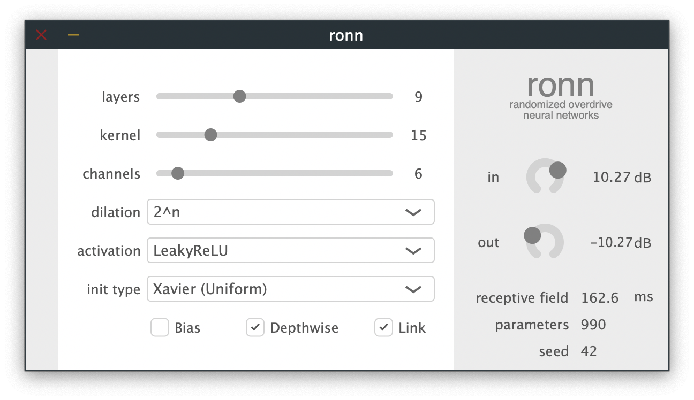

By processing audio signals in the time-domain with randomly weighted temporal convolutional networks (TCNs), we uncover a wide range of novel, yet controllable overdrive effects. We discover that architectural aspects, such as the depth of the network, the kernel size, the number of channels, the activation function, as well as the weight initialization, all have a clear impact on the sonic character of the resultant effect, without the need for training. In practice, these effects range from conventional overdrive and distortion, to more extreme effects, as the receptive field grows, similar to a fusion of distortion, equalization, delay, and reverb. To enable use by musicians and producers, we provide a real-time plugin implementation. This allows users to dynamically design networks, listening to the results in real-time.
History
Distortion was first discovered by guitarists when they found that pushing their guitar amplifiers beyond their operating range produced a warm and fuzzy sound.
Architecture
The TCN architecture has already been shown to be successful in modeling sequential data across a number of domains, with WaveNet being one of the early examples in the audio domain (). More recent works
Plugin
The goal of the plugin is to build a C++ implementation that enables users to quickly and easily construct different randomly weighted TCNs, and listen to the produced effects in real-time. This shifts the process of searching for and selecting audio processing effects from the traditional paradigm where users adjust the controls of traditional DSP devices like equalizers and dynamic range compressors, to one where users adjust the architecture of a neural network in order to search for new effects. This is true since the TCN can be viewed as a generalized audio effect that can effectively implement a range of transforms similar to those traditionally employed by audio engineers (e.g. equalization, dynamic range compression, delay, reverberation).
Related Projects
Check out our related projects on using neural networks in audio effects!


Paper

Bibtex
@article{steinmetz2020overdrive,
title={Randomized Overdrive Neural Networks},
author={Steinmetz, Christian J. and Reiss, Joshua D.},
journal={arXiv preprint arXiv:},
year={2020}}